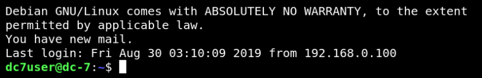
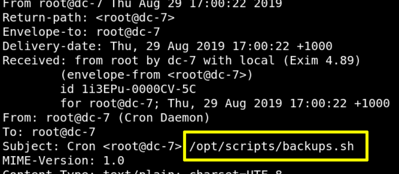
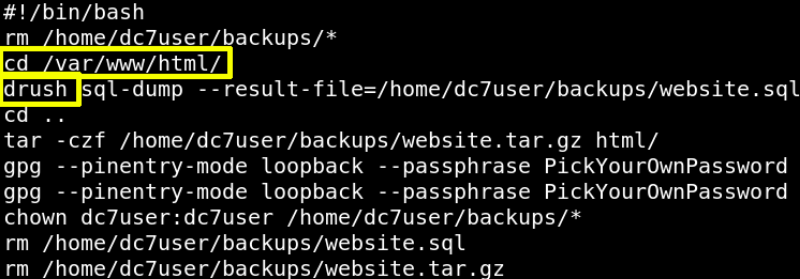

4.1 Connect with SSH
a) Try to connect with ssh and after obtaining tty shell we go for post enumeration and start directory traversing.
$ssh
dc7user@192.168.12.70
Output:

b) Let's enumerate the directory files.
dc7user@dc-7
:
~
$ls
Output:
c) Let's what “mbox” file contains.
dc7user@dc-7
:
~
$cat
mbox
Output:

The file contains mails and the first message contains “/opt/script/backup.sh” as the subject of the message.
d) Let's see the content of “/opt/script/backup.sh”.
dc7user@dc-7
:
~
$cat
/
opt
/
scripts
/
backups.sh
Output:

“drush” is a Drupal shell and it is a command-line utility that is used to communicate with Drupal CM.
Notice:
Keep in mind the path “/var/www/html/” when you ran “drush”.
Looking up on Google you'll find how to use “drush”.
Index